Взаємозв'язок між двома змінними може бути детермінованим або стохастичним.
Як приклад детермінованого зв'язку можна розглянути математичну модель або формулу, що переводить швидкість у милях за годину (мл/год.) в кілометри за годину (км/год.)- Так як 1 миля дорівнює приблизно 1,6км, то модель має вигляд
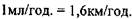
Так, швидкість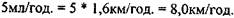
Розглянута модель описує детерміновану форму зв'язку між двома величинами, тому що не містить похибки (крім, можливо, заокруглення) у визначенні швидкості в км/год.
Нажаль, небагато взаємозв'язків між економічними факторами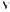 підприємницькій сфері можна так легко визначити. Так, наприклад, при вивченні впливу фактору рекламних затрат на рівень продажу певного товару, майже завжди допускається деяка варіація залежності між ними.
Коли рівень рекламних затрат виражається деякою величиною 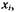 то обсяг продажу досягає певної величини.
Однак, якщо і в майбутньому рівень рекламних затрат дорівнюватиме 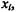 рівень продажу може приймати інше значення, тобто залежна змінна (рівень продажу) демонструє вплив випадкових факторів.
Математичні моделі такої природи називають стохастичними, тобто обумовленими впливом випадкових факторів. Моделі, що відображають таку залежність можна представити як
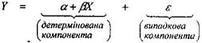 (2)
Формула (2) відображає реально існуючий характер регресійної залежності між величинами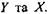
Зауважимо, що у цьому випадку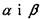є параметрами.
Для ілюстрації припустимо, що комп'ютерна фірма намагається встановити зв'язок між величиною жорстких дисків, виготовлених підприємством, та сумарними витратами на їх виробництво.
Начальник фінансово-планового і статистичного відділу фірми зібрав дані за п'ятиденний період по двох показниках: кількості дисків та відповідних витрат. Дані представлені Таблицею 1. Крім того, ці дані зображені діаграмою розсіювання на Рис.2.
Якщо пряму лінію провести посередині діаграми розсіювання, то деякі спостереження (точки) будуть над цією прямою, інші – під нею.
Слід зауважити, що не так багато залежностей реального світу можна описати суворо лінійною формою. Отже, не всі наші спостереження будуть належати регресійній прямій і тому буде існувати деяке розсіювання статистичних даних навколо неї. Це відхилення і компенсується у формулі (2) випадковою компонентою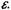
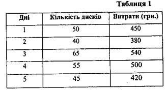
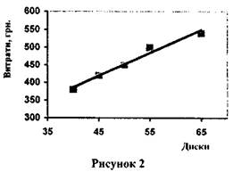
Особливо слід підкреслити, що для реальної репресійної прямої, параметри залишаться невідомими.
Єдине, що можна зробити - це оцінити невідомі параметри за допомогою простої моделі, а саме:
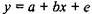 (3)
Значення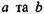оцінюють невідомі параметри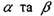. Вони називаються, відповідно, регресійними константами або регресійними коефіцієнтами.
Останній член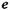- це помилка, яка виникає внаслідок того, що не всі дані точки належать регресійній прямій, тобто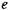- випадкова змінна (випадкова помилка).
Однак, припустимо, що випадкова помилка має середнє
значення, що дорівнює 0, та дисперсію
При цих припущеннях математична модель, що представлена формулою (3) та використана для оцінки залежності між змінними величинами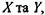може бути зображена регресійною прямою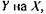
а саме: 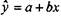 (4)
де 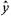 - оцінки значень для залежної змінної, які представлені
точками на прямій регресії.